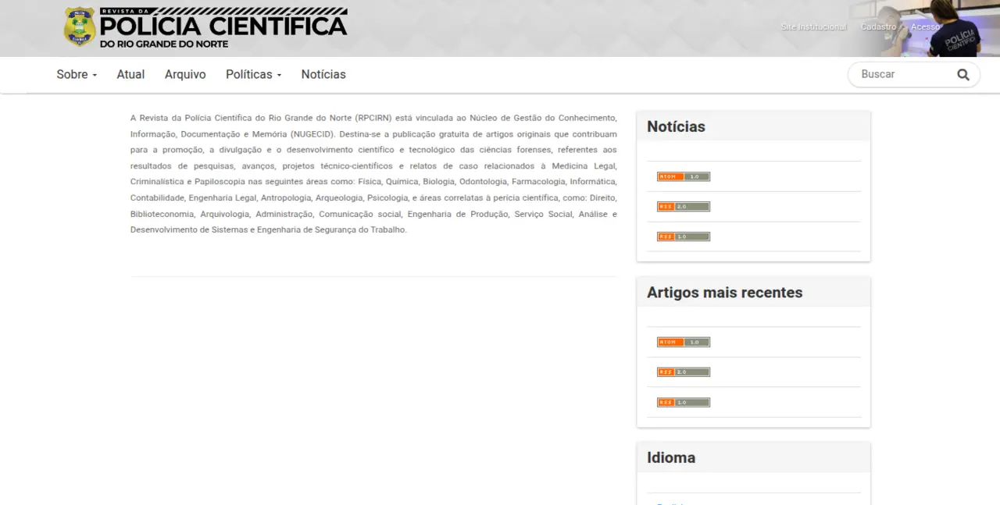

Revista da Polícia Científica do Rio Grande do Norte
Periódico científico da Polícia Científica do RN, mantido pelo NUGECID e publicado em Open Journal Systems, com submissão e avaliação por pares.
Sobre a revista
A RPCIRN reúne produção científica nas áreas de criminalística, medicina legal, identificação civil e criminal e temas afins da perícia oficial, aproximando o conhecimento técnico produzido no estado da comunidade acadêmica e da sociedade.
O periódico adota o fluxo editorial completo do Open Journal Systems: submissão online, avaliação por pares, editoração e publicação em acesso aberto.
Condições de acesso
- Submissão de artigos pelo sistema OJS.
- Avaliação por pares.
- Acesso aberto ao conteúdo publicado.
Como submeter
- Criar cadastro no sistema, como autor.
- Enviar o manuscrito e preencher os metadados: autoria, resumo e palavras-chave.
- Acompanhar a avaliação por pares pelo painel do autor.
- Após aprovação, o artigo entra na edição em preparação.

Acesso
Em breve
A revista está em processo de implantação. O endereço de acesso será publicado aqui assim que o portal entrar no ar.
Acessar revista — em breve